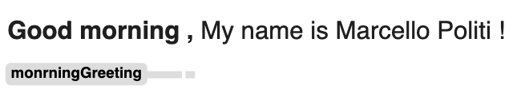
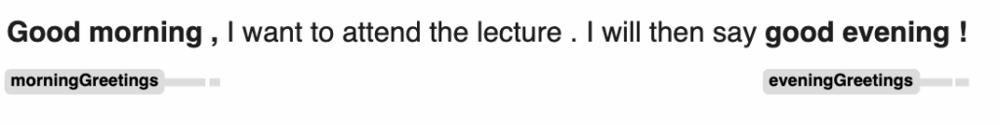
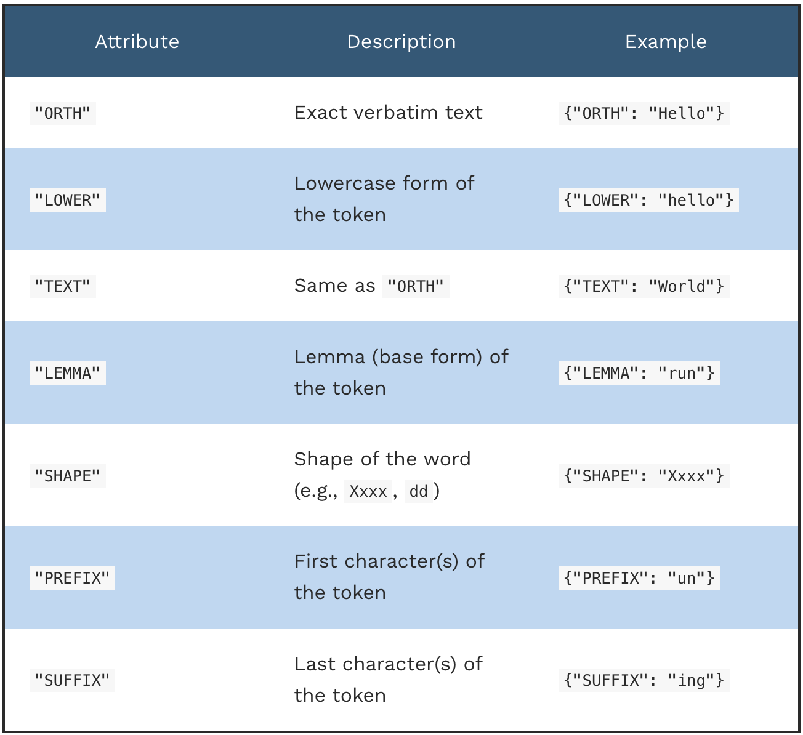
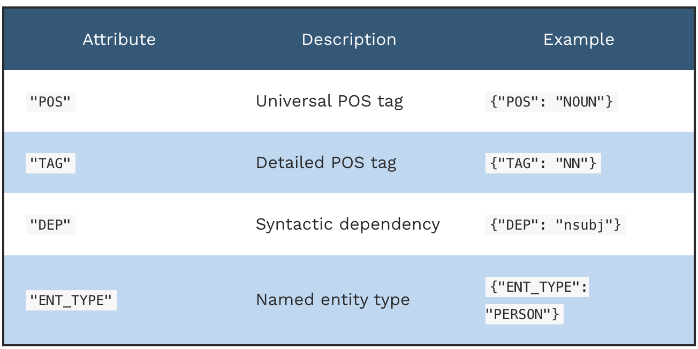
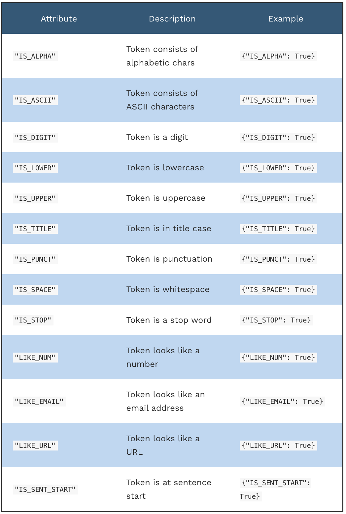
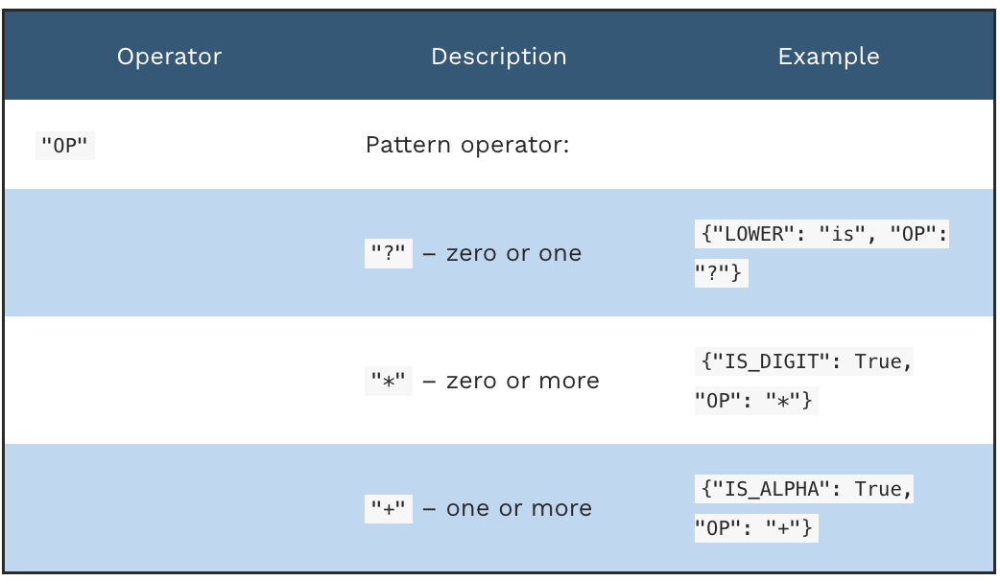
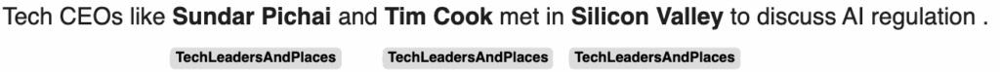
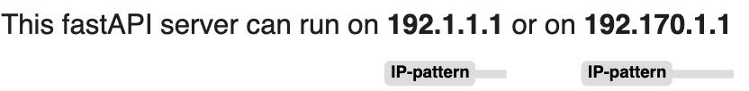
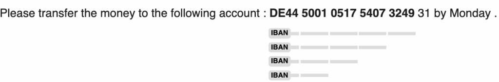

Rule-based Matching for Information Extraction with SpaCy
Mastering NLP with spaCy — Part 3.
September 14, 2025 · NLP, SpaCy
Introduction
It is important to understand how to use spaCy rules to identify patterns within some text. There are entities like times, dates, IBANs and emails that follow a strict structure, so it is possible to identify them with deterministic rules, for example, by using regular expressions ( regexes).
SpaCy simplifies the usage of regexes by making them more human-readable, so instead of weird symbols, you will use actual descriptions using the Matcher class.
Token-based matching
A regex is a sequence of characters that specifies a search pattern. There is a Python built-in library to work with regexes called re: https://docs.python.org/3/library/re.html
Let’s see an example.
"Marcello Politi"
"Marcello Politi"
"Marcello Danilo Politi"
reg = r"Marcello\\s(Danilo\\a)?Politi"The problem with regexes, and the reason why many programmers don’t love them, is that they’re difficult to read. This is why spaCy provides a clean and production-level alternative with the Matcher class.
Let’s import the class and see how we can use it. (I will explain what Span is later).
import spacy
from spacy.matcher import Matcher
from spacy.tokens import Span
nlp = spacy.load("en_core_web_sm")Now we can define a pattern that matches some morning greetings, and we label this pattern “morningGreeting”. Defining a pattern with Matcher is straightforward. In this pattern, we expect a word that, when converted to lower case, matches the word “good”, then the same for “morning”, and then we accept so punctuation at the end.
matcher = Matcher(nlp.vocab)
pattern = [
{"LOWER": "good"},
{"LOWER": "morning"},
{"IS_PUNCT": True},
]
matcher.add("monrningGreeting", [pattern])A Span is a singular sentence, so the Matcher can find the starting and ending point of multiple spans that we iterate over with a for loop.
We add all the spans in a list and assign the list to the doc.spans[“sc”]. Then we can use displacy to visualise the span
doc = nlp("Good morning, My name is Marcello Politi!")
matches = matcher(doc)
spans = []
for match_id, start, end in matches:
spans.append(
Span(doc, start, end, nlp.vocab.strings[match_id])
)
doc.spans["sc"] = spansfrom spacy import displacy
displacy.render(doc, style = "span")
A Matcher object accepts more than one pattern at a time!
Let’s define a morningGreeting and a eveningGreeting.
pattern1 = [
{"LOWER": "good"},
{"LOWER": "morning"},
{"IS_PUNCT": True},
]
pattern2 = [
{"LOWER": "good"},
{"LOWER": "evening"},
{"IS_PUNCT": True},
]Then we add these patterns to the Matcher.
doc = nlp("Good morning, I want to attend the lecture. I will then say good evening!")
matcher = Matcher(nlp.vocab)
matcher.add("morningGreetings", [pattern1])
matcher.add("eveningGreetings", [pattern2])
matches = matcher(doc)As before, we iterate over the spans and display them.
spans = []
for match_id, start, end in matches:
spans.append(
Span(doc, start, end, nlp.vocab.strings[match_id])
)
doc.spans["sc"] = spansfrom spacy import displacy
displacy.render(doc, style = "span")
The syntax supported by spaCy is huge. Here I report some of the most common patterns.
Text-based attributes

Linguistic features

Boolean flags

Operators
Used to repeat or make patterns optional:

Example:
What is a pattern that matches a string like: “I have 2 red apples”, “We bought 5 green bananas”, or “They found 3 ripe oranges” ?
Pattern Requirements:
- Subject pronoun (e.g., “I”, “we”, “they”)
- A verb (e.g., “have”, “bought”, “found”)
- A number (digit or written, like “2”, “five”)
- An optional adjective (e.g., “red”, “ripe”)
- A plural noun (fruit, for example)
pattern = [
{"POS": "PRON"}, # Subject pronoun: I, we, they
{"POS": "VERB"}, # Verb: have, bought, found
{"LIKE_NUM": True}, # Number: 2, five
{"POS": "ADJ", "OP": "?"}, # Optional adjective: red, ripe
{"POS": "NOUN", "TAG": "NNS"} # Plural noun: apples, bananas
]Patterns with PhraseMatcher
We we work in a vertical domain, like medical or scientific, we usually have a set of words that spaCy might not be aware of, and we want to find them in some text.
The PhraseMatcher class is the spaCy solution for comparing text against long dictionaries. The usage is quite similar to the Matcher class, but in addition, we need to define the list of important terms we want to track. Let’s start with the imports.
import spacy
from spacy.tokens import Span
from spacy.matcher import PhraseMatcher
from spacy import displacy
nlp = spacy.load("en_core_web_sm")Now we define our matcher and our list of words, and tell Spacy to create a pattern just to recognise that list. Here, I want to identify the names of tech leaders and places.
terms = ["Sundar Pichai", "Tim Cook", "Silicon Valley"]
matcher = PhraseMatcher(nlp.vocab)
patterns = [nlp.make_doc(text) for text in terms]
matcher.add("TechLeadersAndPlaces", patterns)Finally, check the matches.
doc = nlp("Tech CEOs like Sundar Pichai and Tim Cook met in Silicon Valley to discdoc = nlp("Tech CEOs like Sundar Pichai and Tim Cook met in Silicon Valley to discuss AI regulation.")
matches = matcher(doc)
spans= []
for match_id, start, end in matches:
pattern_name = nlp.vocab.strings[match_id]
spans.append(Span(doc, start, end, pattern_name))
doc.spans["sc"] = spans
displacy.render(doc, style = "span")
We can enhance the capabilities of the PhraseMatcher by adding some attributes. For example, if we need to cach IP addresses in a text, maybe in some logs, we cannot write all the possible combinations of IP addresses, that would be crazy. But we can ask Spacy to catch the shape of some IP strings, and check for the same shape in a text.
matcher = PhraseMatcher(nlp.vocab, attr= "SHAPE")
ips = ["127.0.0.0", "127.256.0.0"]
patterns = [nlp.make_doc(ip) for ip in ips]
matcher.add("IP-pattern", patterns)doc = nlp("This fastAPI server can run on 192.1.1.1 or on 192.170.1.1")
matches = matcher(doc)
spans= []
for match_id, start, end in matches:
pattern_name = nlp.vocab.strings[match_id]
spans.append(Span(doc, start, end, pattern_name))
doc.spans["sc"] = spans
displacy.render(doc, style = "span")
IBAN Extraction
The IBAN is an important information that we often need to extract when working in the financial fields, for example if are analysing invoices or transactions. But how can we do that?
Each IBAN has a fixed international number format, starting with two letters to identify the country.
We are sure that each IBAN starts with two capital letters XX followed by at least two digits dd. So we can write a pattern to identify this first part of the IBAN.
{"SHAPE":"XXdd"}It’s not done yet. For the rest of the block we might have from 1 to 4 digits that we can express with the symbol “d{1,4}”.
{"TEXT":{"REGEX:"\\d{1,4"}}We can have one or more of these blocks, so we can use the “+” operator to identify all of them.
{"TEXT":{"REGEX":"\\d{1,4}, "OP":"+"}Now we can combine the shape with the blocks identification.
pattern =[
{"SHAPE":"XXdd"},
{"TEXT":{"REGEX":"\\d{1,4}", "OP":"+"}
]
matcher = Matcher(nlp.vocab)
matcher.add("IBAN", [patttern])Now let’s use this!
text = "Please transfer the money to the following account: DE44 5001 0517 5407 3249 31 by Monday."
doc = nlp(text)
matches = matcher(doc)
spans = []
for match_id, start, end in matches:
span = Span(doc, start, end, label=nlp.vocab.strings[match_id])
spans.append(span)
doc.spans["sc"] = spans
displacy.render(doc, style="span")
Final Thoughts
I hope this article helped you to see how much we can do in NLP without always using huge models. Many times, we just need to find things that follow rules — like dates, IBANs, names or greetings — and for that, spaCy gives us great tools like Matcher and PhraseMatcher.
In my opinion, working with patterns like these is a good way to better understand how text is structured. Also, it makes your work more efficient when you don’t want to waste resources on something simple.
I still think regex is powerful, but sometimes hard to read and debug. With spaCy, things look clearer and easier to maintain in a real project.
 Linkedin ️| X (Twitter) | Websitelinkedin.com
Linkedin ️| X (Twitter) | Websitelinkedin.com